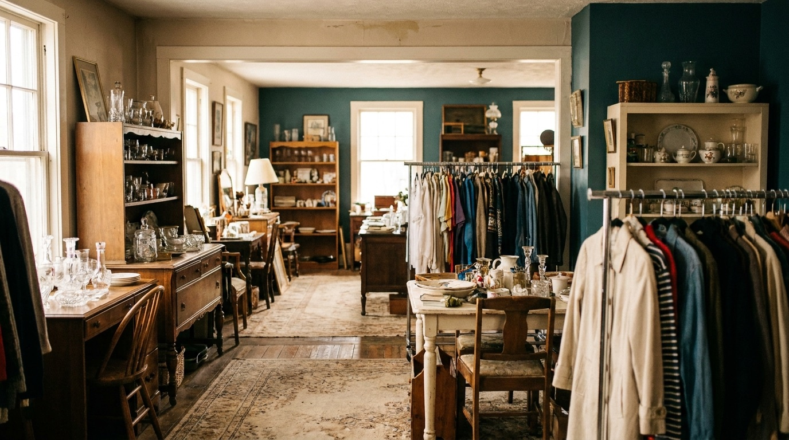
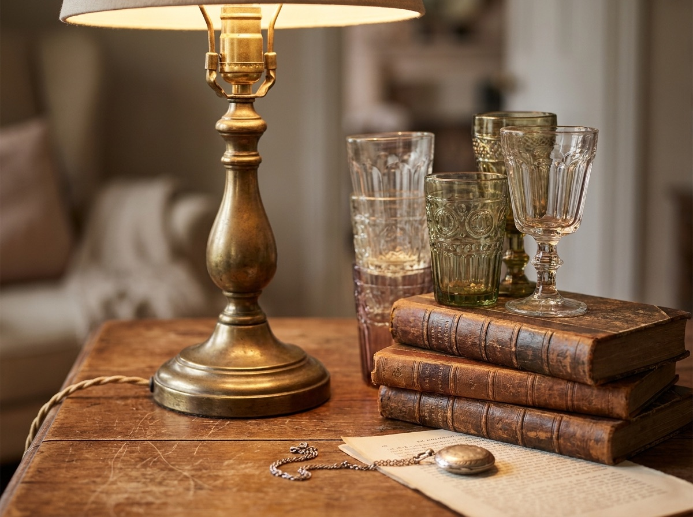

Furniture and antiques
Tables, chairs, dressers and case pieces, plus older antiques worth a second look. Stock turns over, so it's never the same twice.

Meredith, New Hampshire · On Route 25
Etcetera Shoppe is seven large rooms of consignment and antiques in the Lakes Region. Furniture, glassware, vintage clothing, jewelry. You come in for one thing and leave with three. We are open every day.
Open seven days a week, year round.
Room by room
Most shops put everything in one window. We spread it across seven rooms, so a slow walk through turns up things you weren't looking for. Here is some of what people find.
Tables, chairs, dressers and case pieces, plus older antiques worth a second look. Stock turns over, so it's never the same twice.
Pressed glass, dishes, serving pieces and the odd full set. Good for filling a gap in grandmother's pattern or starting your own.
Racks of consigned clothing, both vintage and current. Worth a flip-through every time you're in town.
Costume and finer jewelry in the cases, plus the small collectibles that are easy to carry home and hard to find anywhere else.
Costumes for the season, plus the etcetera in our name. The shelf of things that don't fit a category but find the right person.
There's always another doorway. Take your time. The whole point of seven rooms is that you can't see it from the front of the shop.

The shop and the woman who built it
Etcetera Shoppe began in 1973, when Beverly Foerst opened the doors on a small loan and ran the place herself. More than fifty years later she still owns it, a sole proprietor in a town that has changed a lot around her.
That kind of history shows up in the stock. Five decades of consignors and their grandparents' things have moved through these rooms. Some of it is fine, some of it is plain useful, and the fun is that you never know which room holds the thing you'll want.
People driving through the Lakes Region on Route 25 have stopped in for years. Now there's a page that tells you what's inside before you do.
Call before you drive upHave something to consign?
If you're clearing a house, downsizing, or just have quality things that deserve a second life, give us a call. The shop has space, and there's steady foot traffic from people who come specifically to hunt.
Tell us roughly what you have. Furniture, glassware, jewelry, clothing, collectibles. We'll let you know if it's a fit.
We're on Route 25 and open every day, so it's easy to swing in when it works for you.
Your piece goes out on the floor where shoppers actually look for it, across all seven rooms.
Come find us
Open seven days a week, year round. Hours can shift with the season, so a quick call before a long drive never hurts.